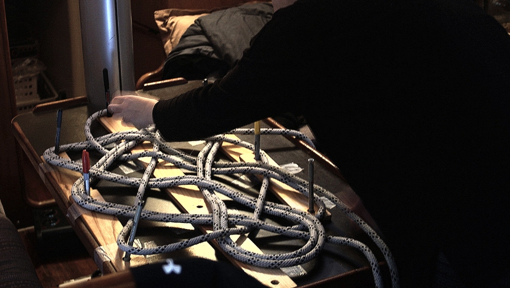
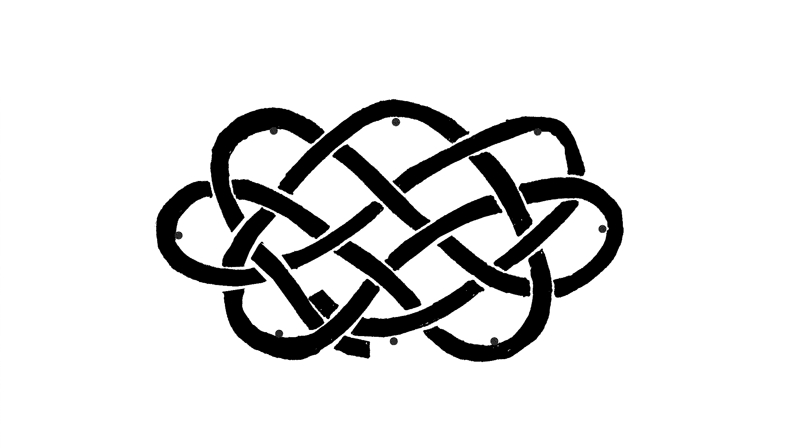
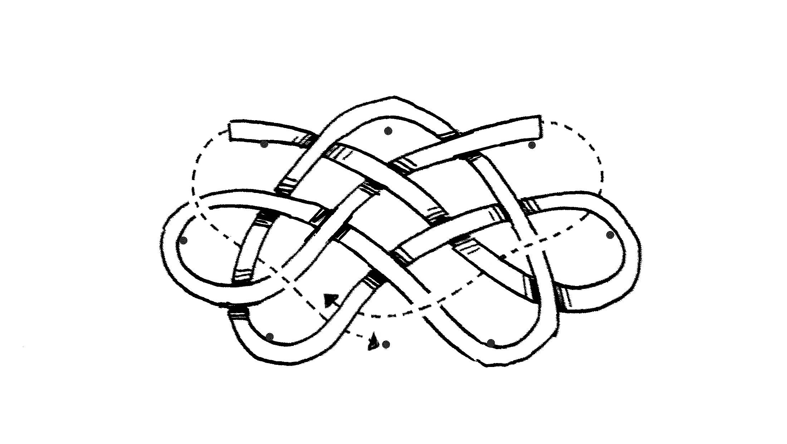
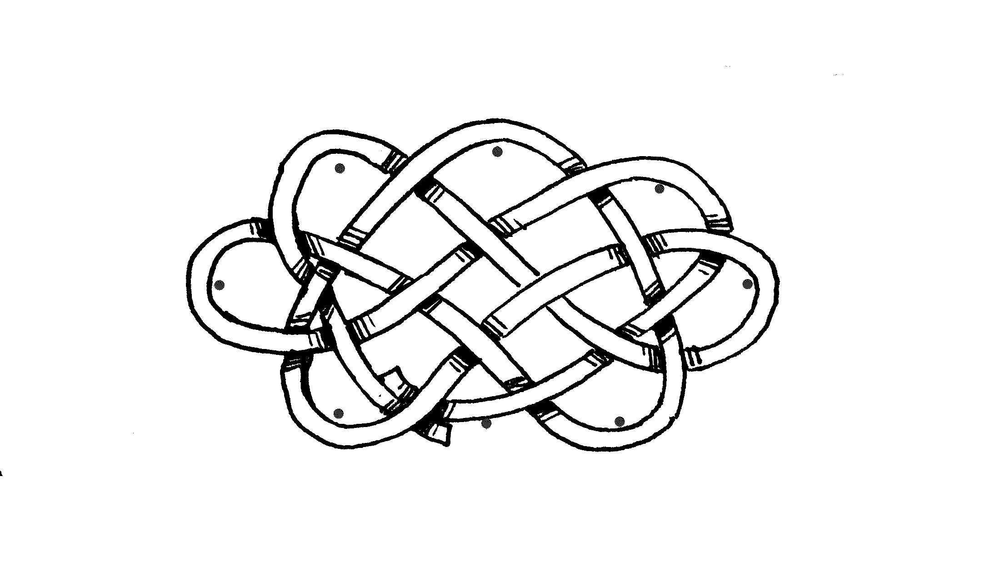
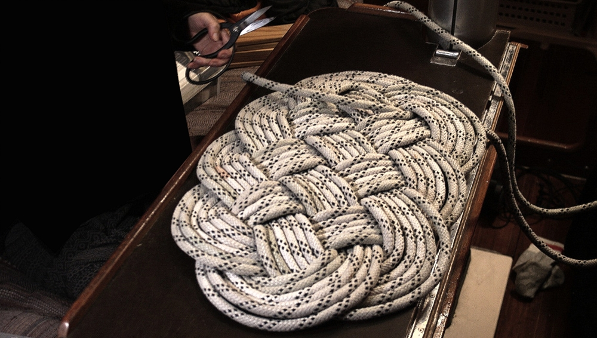
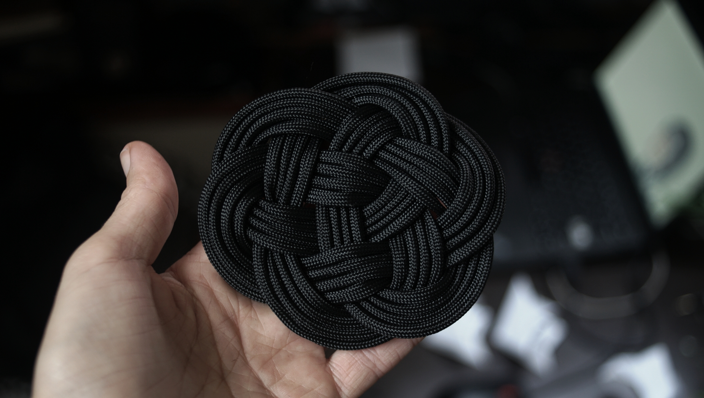
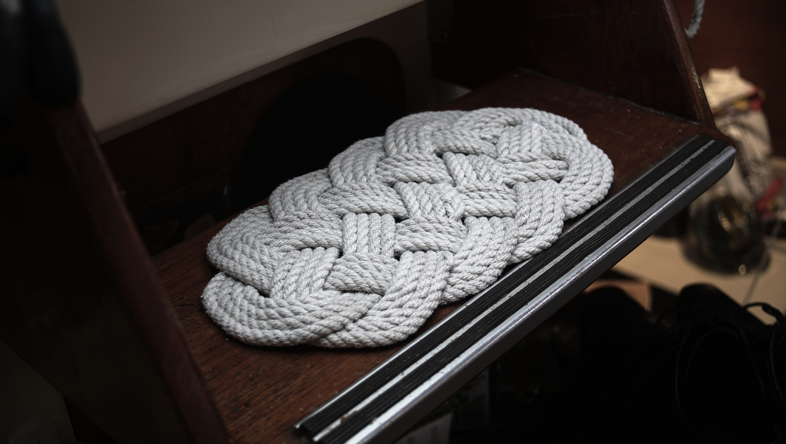

Ocean plait mat
One of the best ways to make use of old rope is to work up a set of rope mats. I made this mat using a 12 mm (1/2") old 35-meter (115 ft) main halyard, making a 6-pass Napoleon knot with a Flemish coil around it. The ropes were stitched together in the end so the mat would keep its shape.
Template
Making a template will make the process easy. I made one using objects I had in the boat, as I wanted to take it apart and re-use it in other proejcts afterwards. In tutorials I've seen, people draw the pattern (which shows how ropes overlap) on a wooden board, and plant 8 nails, 1 at each end with the other 3 lined up on either side, forming a diamond shape. Nails are represented by black dots:
The nails (or pens, in my case) help keep a good shape. It is essential, as you'll be passing lines under and over each other, and the last thing you want is to waste time adjusting and re-adjusting the bights.
Starting the mat

Take a bight at 10 m (35 ft) of your 35 meter (115 ft) rope, and set up the knot as shown in the diagram above. Lay it loose, with 3 of the bights laying over a nail (the inside of the bight in contact with the nail).
Continue to run the line, as shown in the above diagram.
Continue yet again to run the line through, making sure that the ropes overlap in the right places. And voila, your pattern should match the one on the above diagram. You have completed your starting pattern.
Doubling the ropes
This part is easier, as it consists of doubling the lines, and only requires that you follow the pattern.
To begin, take the long end, and pass it alongside the short end, all through the pattern until you arrive at the starting point. Now your rope will be doubled. At this point, remove the nails (or pens). Continue through the pattern again until you reach the starting point, this will make 3-passes. As our rope is long, you can continue on to making more passes (this will result in a bigger mat). If you have 3 passes, the mat will be small, but you can enlargen it by adding a Flemish coil around it, using the last of your rope.
If you stop at 3-passes, you'll notice that the knot is very loose, so take a bight anywhere and start picking up the slack, working in both directions through the mat. This part takes a long time, take it slow. If you go too fast, you'll likely mess up the overall shape of the mat. When the mat has a nice shape, and that the knots are tight, cut off the surplus rope.
Flemish coil
Coil the cut rope around the mat. For the mat I made, because I used 6 passes, I made 4 coils around the Napoleon knot in the center. If you make 3 passes, you'll have a lot more rope left over, and you can make a mat that is 9 coils wide.
It is necessary to add stitching to hold the mat together. Thread a large sail needle with marline, and sew through each rope in the coil from the knot to the outer edge radially, then along the edge and back through the coil again to the knot. Do this for the entire mat. Since my coils are 6 rope wide, I also stitched them together in the same manner, otherwise they have a tendency to overlap.
Your mat will be bumpy initially, because of the overlapping ropes, but will flatten out over time. If you're in a hurry to get it flat, use a mallet.
Other mats
Using a similar technique, I've also made smaller mats:
 To make a smaller mat, choose a smaller rope diameter, and length. To make a round-ish, or elongated mat, add, or reduce the number of bights.